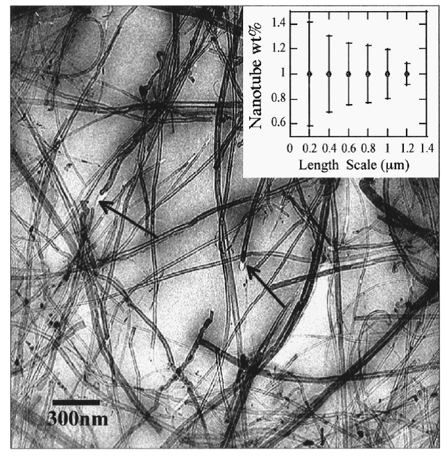

Master’s Thesis
My thesis research focused on prediction of the mechanical properties of carbon nanotube (CNT) reinforced composites. This was done by extending traditional models applied to typical composites (e.g. laminated plate theory).

Figure 1: Multi-wall carbon nanotubes in a polystyrene film.
Publications
- Stiffness Predictions of Carbon Nanotube Reinforced Two and Three-Phase Polymer Composites
- Micromechanical Stiffness Predictions at the Nano-Scale: Carbon Nanotube Reinforced Composites
Talks
- Micromechanical Stiffness Predictions at the Nano-Scale: Carbon Nanotube Reinforced Composites